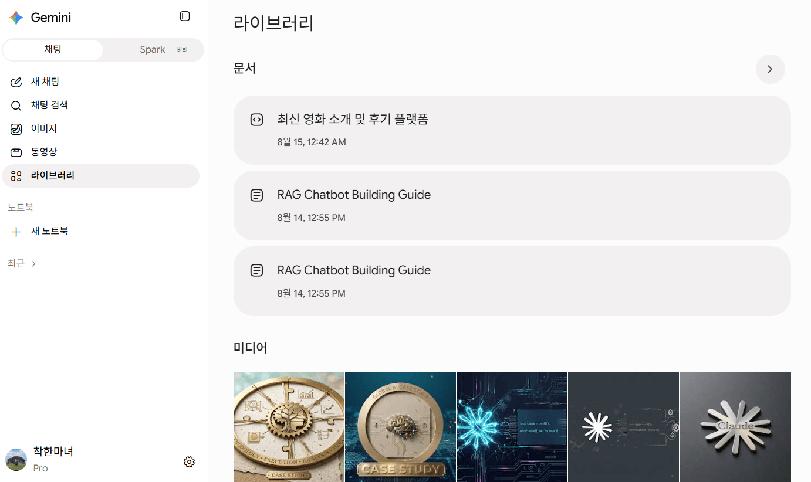
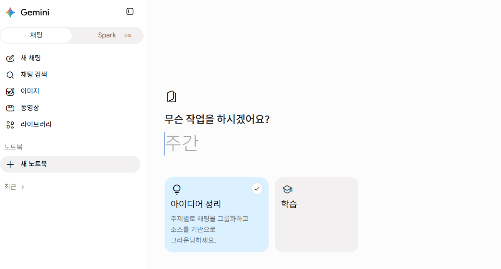
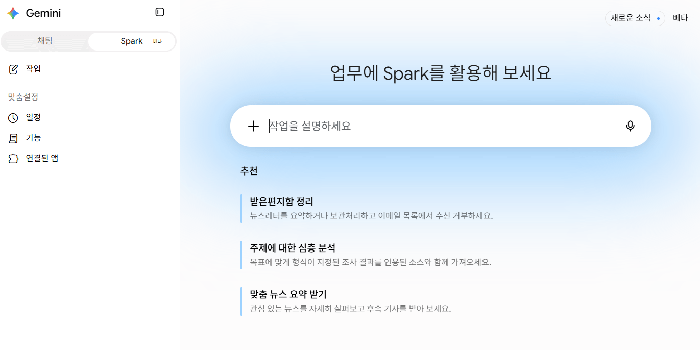
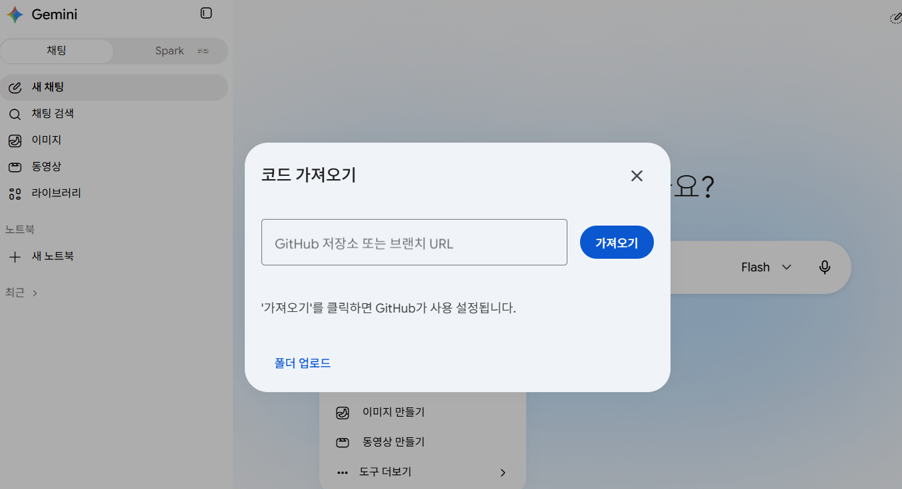
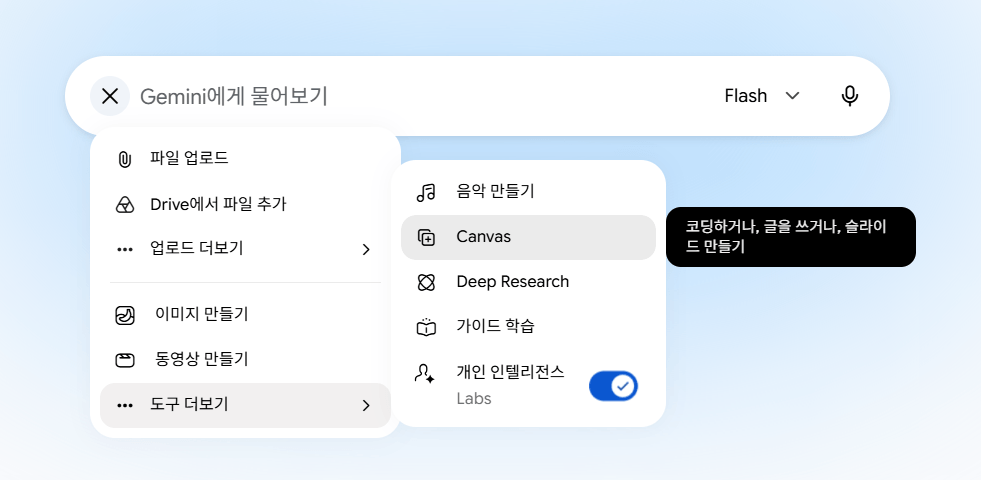
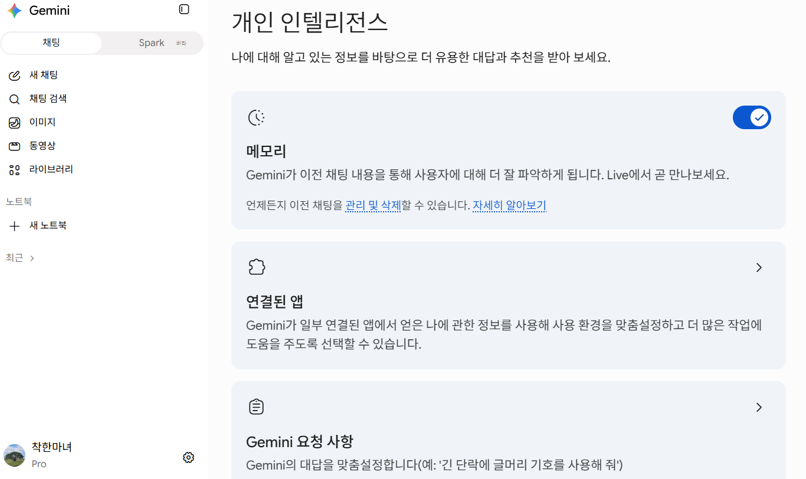

AX 실무 교육 시리즈
AI 코딩 · 생산성 도구
Gemini · Antigravity · Cursor
핵심 기능 · 설치 · 화면 구성 · 안전한 사용법
비개발자 · 개발 초보자
실습형 구성
Gemini → Antigravity → Cursor
핵심 기능 · 설치 · 화면 구성 · 안전한 사용법
각 도구는 독립된 세션으로 진행되며, 실무에서 가장 많이 함께 쓰이는 순서(생산성 → 에이전틱 IDE → 코드 편집기)로 배치했습니다.
핵심 기능 6가지: Library · Notebook · Spark · Import code · Canvas · Personal Intelligence
Google의 에이전틱 개발 플랫폼 15단계: 설치부터 안전한 워크플로우까지
AI 코드 에디터 14단계: Overview · Interface · Tab · Agent · Cloud Agents까지
Gemini에서 만든 이미지를 한곳에서 찾아 다시 열고, 추가 편집·다운로드·공유로 이어가는 공간입니다.

과거 채팅 · 문서 · PDF · 맞춤 지침을 모아 Gemini가 공통 맥락으로 사용하며 NotebookLM과 소스가 동기화됩니다.

Google Cloud 가상머신에서 실행되어 기기가 꺼져도 백그라운드 작업을 계속하며 Connected Apps와 연동됩니다.

GitHub 저장소나 브랜치를 첨부해 코드 구조 · 함수 · 오류 · 개선안을 저장소 맥락으로 질문할 수 있습니다.

Gemini 대화와 편집 화면을 나란히 두고 특정 영역만 선택해 실시간으로 수정하고 내보냅니다.

과거 대화의 기억, Gmail · Photos · YouTube 정보, 지정 응답 지침을 조합해 맞춤 답변을 제공합니다.

Google의 에이전틱 개발 플랫폼으로, 목표를 설명하면 에이전트가 파일 · 터미널 · 브라우저를 사용해 수행합니다.
1. 개발 목표 한 문장 정리
2. Antigravity 앱에서 프로젝트 생성 및 작업 폴더 연결
3. 작은 작업 요청 후 단계별 검증
다중 에이전트 지휘, 기획/검토 중심
직접 코드 편집, Open IDE 연동
터미널 파이프라인 및 자동화
프로그램 커스텀 통합
프로젝트 선택 및 대화 기록 관리
모델 · 모드 · 컨텍스트 지정 후 요청
계획, 코드 diff, Artifacts 검토
my-first-project (scoped to local repo only)
활성 폴더를 직접 수정. 빠른 소규모 수정에 적합.
독립된 Git worktree에서 변경. 안전한 병렬 작업 및 큰 변경에 권장.
완료 조건 정의
수정 가능 파일 지정
금지 영역 기술
실행할 테스트 요청
범위와 순서 사전에 확인
진행 중 코멘트로 방향 조정
스크린샷 및 테스트 결과 재검증
짧고 예측 가능한 입력에 유용
여러 파일 수정 및 리팩터링 처리
파일, 디렉터리, 터미널, MCP 지정
/browser, /schedule, /goal 실행
Terminal: npm test PASSED (4/4)
상시 원칙 (코드 스타일 등)
호출형 순서 (/이름)
SKILL.md 전문 패키지
DB, 로그, GitHub 표준 연결
MCP, Skills, 설정 원클릭 패키지
Daily at 6:00 PM | Auto Test & Summarize
Git 상태 확인
Worktree 승인
테스트/브라우저
Diff 최종 병합
자동완성, 직접 편집, 다중 파일 변경, 터미널 검증을 한 앱에서 수행하는 AI 코딩 도구입니다.
Central Code Editor + Right Side Agent Panel
파일 탐색기
중앙 편집기
AI 에이전트 창
하단 실행 영역
회색 제안 수락 시 Tab, 거절 시 Esc. 보일러플레이트 및 반복 코드 작성에 최적.
수정할 코드 블록을 선택하고 Cmd/Ctrl+K 입력 후 원하는 변화 지시.
Instructions + Tools + Model 조합으로 전체 프로젝트 단위 다중 파일 변경 수행.
Agent Auto-Fix Lints: On
Review Policy: Request Review
단위 테스트 및 빌드 자동 실행
UI 및 핵심 사용자 흐름 직접 검증
저장소 버전 관리 규칙
Markdown 기반 간단 공통 지침
GitHub 이슈, DB, 문서 검색 등 읽기 전용 권한부터 순차적 연결 권장.
Cmd/Ctrl+Shift+P > Open Agents Window 실행.
Local, Cloud, SSH, Worktree 에이전트를 사이드바에서 병렬 관리.
Parallel Agents: Agent-1 (Local) | Agent-2 (Cloud)
PC가 꺼져도 클라우드 환경에서 저장소 복제, 빌드, 테스트 후 PR 생성 가능.
PR 요약, 의존성 점검, 정기 보고
Usage 및 모델 사용량 정기적 모니터링
• 문서 · 이미지 · 자료 정리
• 24시간 개인 비서 (Spark)
• 코드는 분석 및 질문 위주
• 여러 에이전트 동시 지휘
• 브라우저 검증 자동화
• 팀 Rules/Workflows 재사용
• Tab/Inline Edit 빠른 수정
• 하네스 엔지니어링 알고리즘 내재
• VS Code 계열 에디터 사용자에게 익숙
Gemini · Antigravity · Cursor 모두 되돌리기 쉬운 작업으로 첫 실습을 시작하세요.